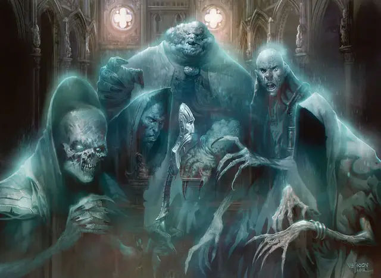

Призрак Обзедат
Obzedat Ghost
Средняя Нежить, законно-злая, именной НИП

Класс Доспеха 14 (природный доспех)
Хиты 110 (20к8 + 20)
Скорость 0 футов, летая 30 футов (парит)
| мод | спас | ||
|---|---|---|---|
| СИЛ | 10 | +0 | +0 |
| ЛОВ | 10 | +0 | +0 |
| ТЕЛ | 12 | +1 | +1 |
| мод | спас | ||
|---|---|---|---|
| ИНТ | 18 | +4 | +7 |
| МДР | 20 | +5 | +8 |
| ХАР | 17 | +3 | +3 |
Навыки Восприятие +8, Проницательность +8
Сопротивление урону звук, кислота, огонь, холод, электричество; дробящий, колющий, рубящий от немагических атак
Иммунитет к урону некротическая энергия, яд
Иммунитет к состояниям захват, испуг, истощение, окаменение, опутанность, отравление, очарование, паралич, сбивание с ног
Чувства тёмное зрение 60 футов, пассивное Восприятие 18
Языки Общий
Опасность 8 (3900 опыта)
Бонус мастерства +3
Особенности
Совет Пяти. У призрака есть способность, основанная на том, кто он есть, как показано ниже:
• Энезеску: Ослабляющий луч. Способность Энезеску «Врожденное колдовство» включает в себя заклинание луч слабости [ray of enfeeblement], которое он может накладывать неограниченно.
• Фаутомни: Стойкость нежити. Если урон снижает хиты Фаутомни до 0, он должен совершить спасбросок Телосложения Сл 5 + полученный урон, если только урон не является излучением или от критического попадания. Вместо этого при успехе хиты Фаутомни опускаются до 1.
• Карлов: Неестественная энергия. Когда Карлов восстанавливает хиты, он совершает с преимуществом броски атаки в свой следующий ход.
• Вулиев: Телепортация. Способность «Врожденное колдовство» Вулиева включает в себя заклинание туманный шаг [misty step], которое он может накладывать неограниченно.
• Ксил Ксакс: Затяжная злоба. Когда хиты Сила Заксоса опускаются до 0, его бестелесная форма взрывается взрывом некротической энергии. Каждое существо в пределах 5 футов от него должно совершить спасбросок Телосложения Сл 16, получая 14 (4к6) урона некротической энергией при провале или половину этого урона при успехе.
Эфирное зрение. Призрак может видеть на 60 футов вглубь Эфирного Плана, когда он находится на Материальном Плане, и наоборот.
Бестелесное перемещение. Призрак может перемещаться сквозь других существ и объекты, как если бы они были труднопроходимой местностью. Он получает 5 (1к10) урона силовым полем, если заканчивает свой ход внутри объекта.
Врожденное колдовство. Базовой характеристикой заклинаний призрака является Мудрость (Сл спасброска от заклинания 16, +8 к попаданию атаками заклинаниями). Он может использовать следующие заклинания, без использования компонентов:
• Неограниченно: леденящее прикосновение [chill touch] (как при 5-м уровне, призрак восстанавливает хиты, равные половине урона, нанесённого цели)
• 1/день каждое: святилище [hallow], духовные стражи [spirit guardians] (вариант 4-го уровня)
Легендарное сопротивление (1/день). Если призрак проваливает спасбросок, он может сделать спасбросок успешным.
Черты Совета призраков.
Идеал:. «Влияние измеряется властью, статусом и деньгами, но в основном деньгами».
Привязанность. : «Собирай как можно больше, пока можешь, ибо после смерти ты заберешь это с собой».
Слабость. : «У каждого есть своя цена».
Действия
Вытягивание жизни. . Рукопашная атака оружием: +8 к попаданию, досягаемость 5 фт., одно существо. Попадание: 18 (4к8) урона некротической энергией, и призрак восстанавливает хиты, равные половине урона, полученного целью. Цель должна преуспеть в спасброске Телосложения Сл 13, иначе максимум её хитов уменьшится на величину, равную полученному урону. Цель умирает, если её максимум хитов уменьшается до 0. Это уменьшение максимума хитов цели продолжается до тех пор, пока цель не завершит продолжительный отдых.
Созыв Совета Призраков. Призрак вызывает остальных четырех членов Обзедата. В начале следующего хода призрака другие участники появляются в незанятых пространствах в пределах 30 футов от вызывающего. Каждый призрак при появлении совершает свой бросок инициативы.
Легендарные действия
Если пять призраков Обзедата находятся в пределах 30 футов друг от друга, они могут вместе совершить 3 легендарных действия, выбрав один из вариантов ниже. Одновременно можно использовать только один легендарный вариант действия и только в конце хода другого существа. Обзедат призраков восстанавливает потраченные легендарные действия в начале хода призрака с наибольшей инициативой.
Вынужденное послушание. Цель, которую могут видеть все призраки Обзедат, должна преуспеть в спасброске Мудрости Сл 16, иначе преклонится до конца своего следующего хода. Пока это преклонение не закончится, цель не может совершать действия или реакции, её скорость равна 0 и не может быть увеличена.
Наемные духи (стоит 3 действия). Призраки Обзедат призывают 1к6 связанных договором духов [indentured Spirit]] в пределах 60 футов от одного из них.
Описание
Призраков, составляющих Обзедат, традиционно называют патриархами, хотя они могут быть мужчинами или женщинами. Это самые старые, самые богатые и самые влиятельные олигархи Орзовского синдиката. Они были мертвы веками, но отказываются расставаться с состояниями, которые накопили при жизни. Пристрастившиеся к власти и престижу, эти патриархи продолжают доминировать в гильдии и накапливать еще большие состояния.
В основном единогласно. Призраки Обзедата действуют как единое целое, движимое общим желанием накопить как можно больше богатства для гильдии. Во времена разногласий старший член совета проявляет свое старшинство, чтобы подчинить совет своей воле.
Дедушка Карлов. Главой совета, дающим окончательное одобрение его решениям и разрывающим связи внутри группы, является Карлов, известный как Дедушка. При жизни Карлов был самым жадным из Орзовских олигархов, и его многовековая жизнь не уменьшила его жажду большего богатства.
Природа нежити. Призрак Обзедат не нуждается в воздухе, еде, питье или сне.